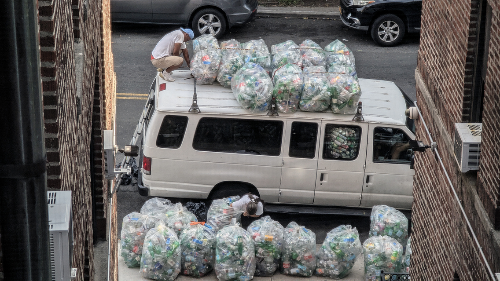
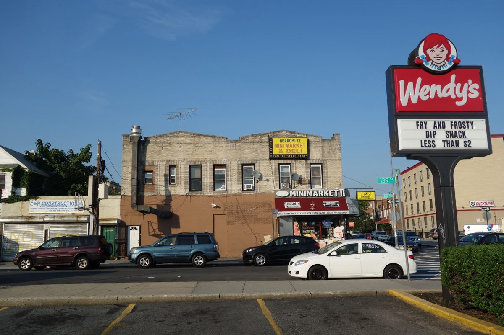
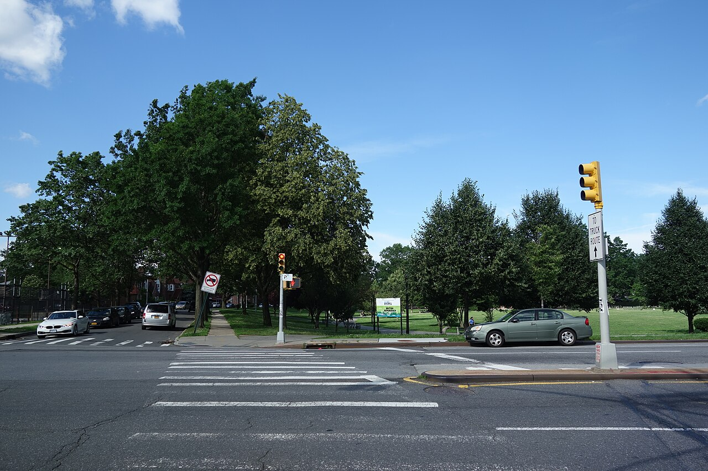
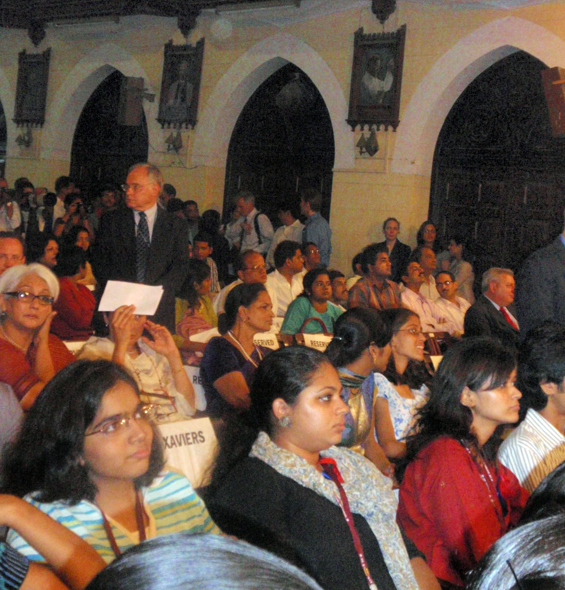

Building a stronger Queens by investing in what's next.
Jamaica Avenue, Queens
BlaQue Community Cares is a Queens-rooted institution working at the intersection of community, research, storytelling, and economic opportunity.
See it in Action →We document what communities build, strengthen what works, and invest in ideas that keep Southeast Queens thriving, shaping what comes next.




We see the value in our community. Now we're building what's next.


What We're Building
Knowledge, tools, and relationships that strengthen Southeast Queens from the inside out. We invest in what our community already knows works.
Storytelling & Visibility
Sharing the stories that matter. We amplify the voices, legacies, and futures of Black Queens through media, research, and public storytelling.
Community Archive
Preserving our history while building our future. Our archive documents the people, places, and institutions that shaped Queens.
Economic Advocacy
Policy, investment, and opportunity designed to benefit the people already here. We advocate for economic models that serve our community first.